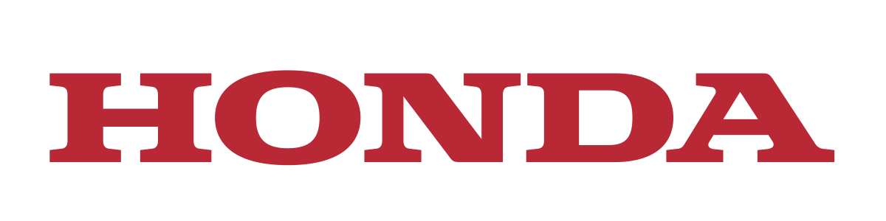
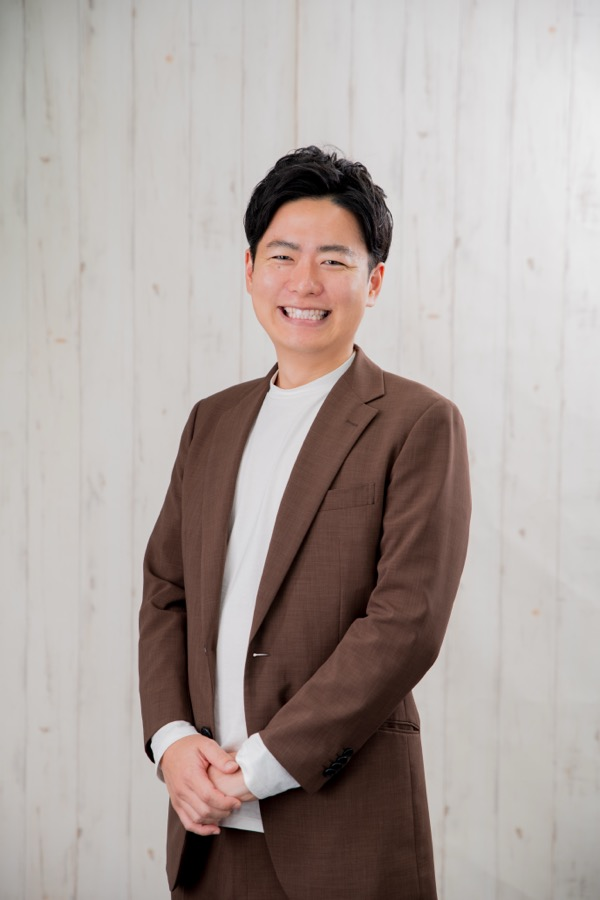
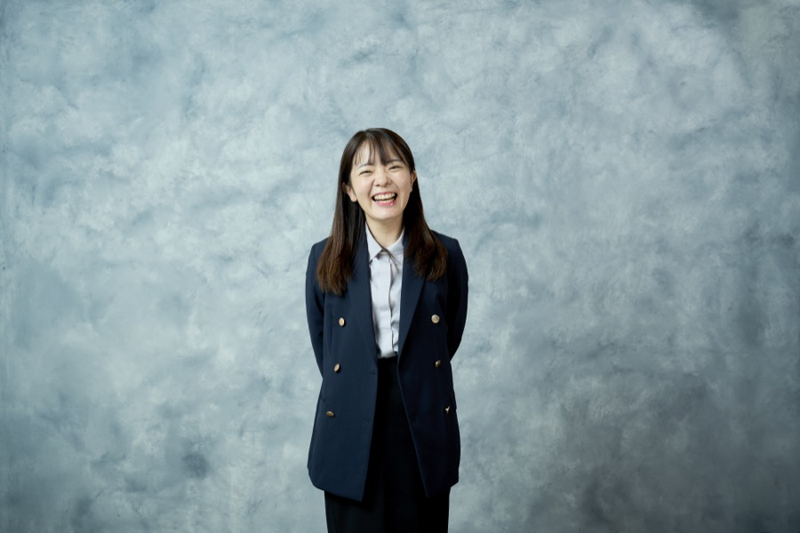

経営人材が参画した企業・支援先（一部）



事業責任者・幹部候補からCXOまで。
経営層との直接的な接点から生まれる非公開ポジションを、
あなたの経歴と志向に合わせてご紹介します。

年齢・業界よりも、「経営に近づく意志があるかどうか」を大切にしています。
経営人材に特化したエージェントとして、2つの形であなたの次のキャリアを支援します。
事業責任者候補・次世代幹部候補・CXO直下ポジションなど、経営に近づく求人を厳選してご紹介。投資・コンサルティングで築いた経営層との直接的な接点から、公開求人には載らないポジションをご提案します。
現職を続けながら経営に関わりたい方には、登録だけでマッチする副業・顧問案件の情報をお届けします。週1日からの社外CXO・アドバイザリーという選択肢もご用意しています。
経営に近づく求人・案件を、フェーズと志向に合わせてご紹介します。
※ 求人例はイメージです。年収はポジション・ご経験により異なります。非公開求人を含む最新のポジションは、ご登録後にご案内します。
経営への一歩を踏み出した方々の声をご紹介します。

「社内で経営に関わるには、あと10年かかる実感がありました。事業のP/L全体を持つ今は、毎日が経営の実地訓練です。あのとき市場価値を率直に示してもらえたことが決め手でした。」

「提案する側から、意思決定する側へ。コンサルでは得られなかった『自分の事業』という感覚があります。経営層と直接つながっているエージェントだからこそ出てくる話だと思いました。」

「すぐに転職する気はありませんでした。それでも『現職のまま経営に関わる』という選択肢を提示してもらい、いまは2社の営業組織づくりに伴走しています。次のキャリアの解像度が上がりました。」


登録は1分。その後はあなたの希望に合わせて、2つのルートでご支援します。
氏名・メール・希望区分のみ。職務経歴の入力は任意です。
正社員転職をご希望の方と、副業・顧問をご希望の方で進み方が分かれます。
あなたの経歴・志向にマッチするポジションを厳選してご案内します。
選考調整から条件交渉、参画後の活躍まで伴走します。
今の職場を辞める必要はありません。まず、あなたの市場価値を聞いてみてください。
CXO CIRCUIT（仮）は、Beyondge株式会社が運営する経営人材特化のキャリアプラットフォームです。スタートアップへの投資・コンサルティングで培った経営層との直接的な接点があるからこそ、公開求人には載らない経営ポジションをご紹介できます。